Alvocats ecològics de l'Empordà
Del nostre arbre a casa teva
Alvocats cultivats amb cura, respectant la natura i amb tot el seu sabor. Directament de la nostra finca a casa teva.
Compra la collitaQuatre varietats. Un mateix origen
Els nostres alvocats
Cultivem diferents varietats per oferir-te el millor sabor durant tota la temporada.
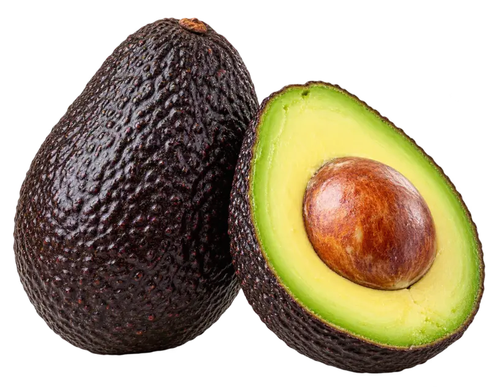
Hass
Sabor intens i textura cremosa.
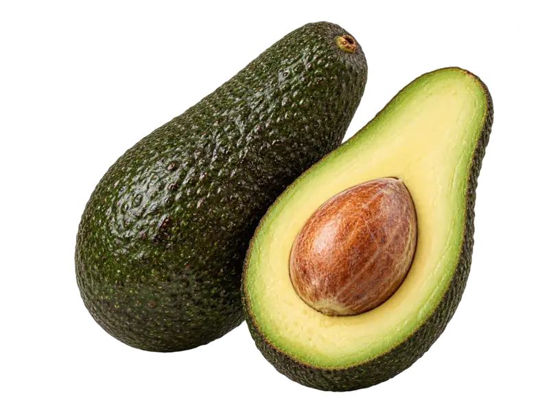
Pinkerton
Gran equilibri i excel·lent qualitat.
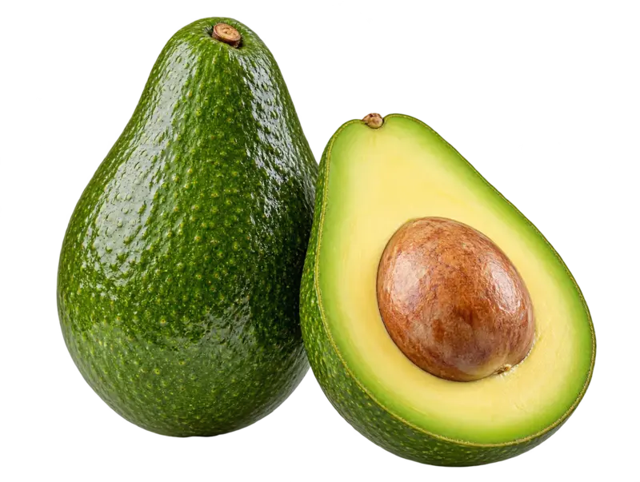
Fuerte
Sabor suau i delicat.
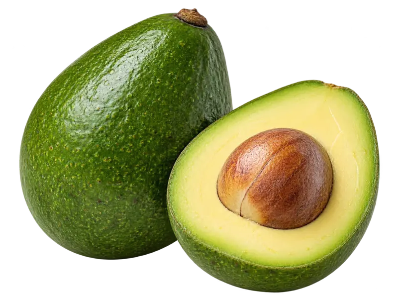
Bacon
Ideal per a qui busca un sabor més suau.
Tria la teva caixa
Alvocats acabats de collir, directament de la nostra finca a casa teva.
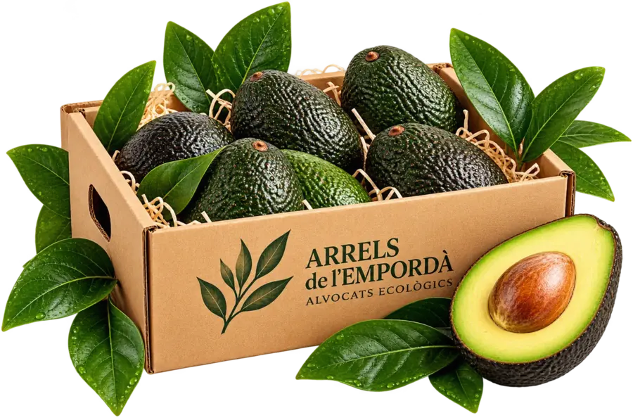
Caixa 6
La preferidaIdeal per tastar els nostres alvocats i gaudir-los a casa.
- 6 alvocats
- Enviament inclòs
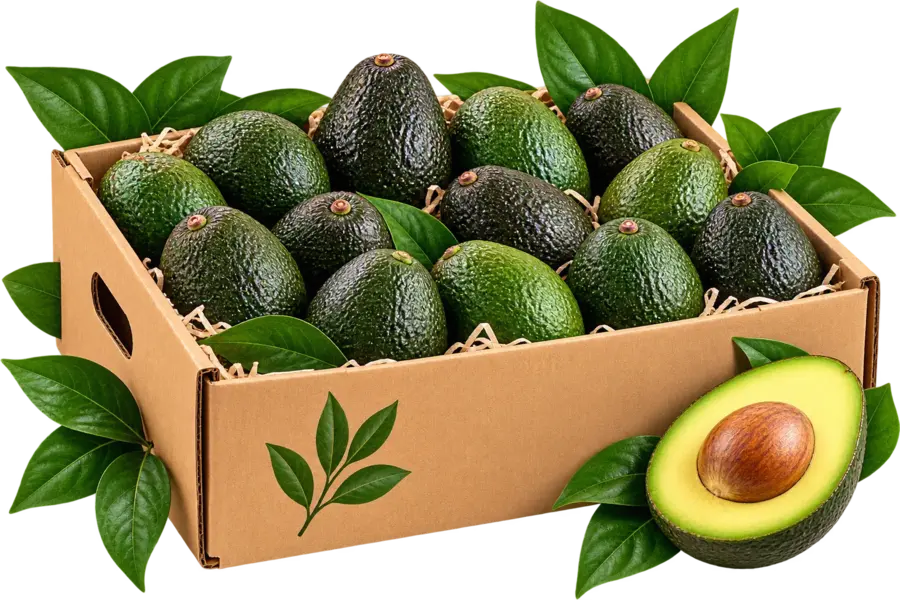
Caixa 12
Per als amants de l'alvocatPer a qui sempre en vol tenir a casa.
- 12 alvocats
- Enviament inclòs
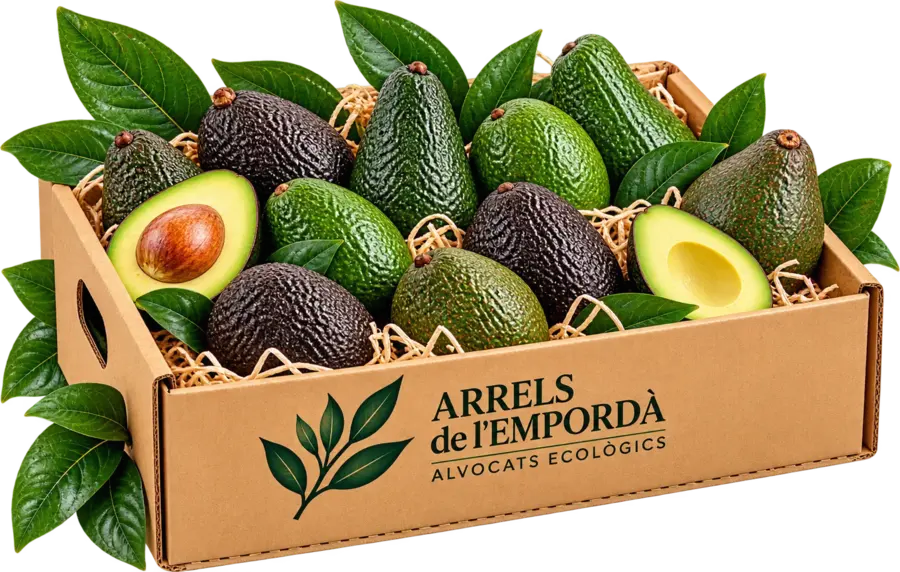
Caixa Mix
Tasta les nostres varietatsUna selecció dels quatre tipus d'alvocat de la nostra finca.
- Enviament inclòs
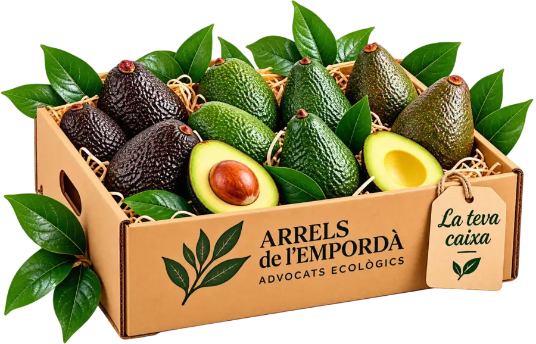
La teva caixa
Fes-la al teu gustTria la varietat que més t'agrada i la quantitat que vols.
- Personalitza la teva caixa
- Enviament inclòs
La nostra finca
Arrels de l'Empordà
A Pedret i Marzà, al cor de l'Alt Empordà, cultivem els nostres alvocats amb passió, respectant la natura i apostant per una agricultura sostenible i de proximitat.
El nostre propòsit és oferir-te alvocats de la màxima qualitat, collits al punt òptim i directament de la nostra finca a casa teva.
Descobreix la nostra finca- Cultiu
ecològic - Al cor
de l'Empordà - Respecte
per la natura - Passió
per l'alvocat
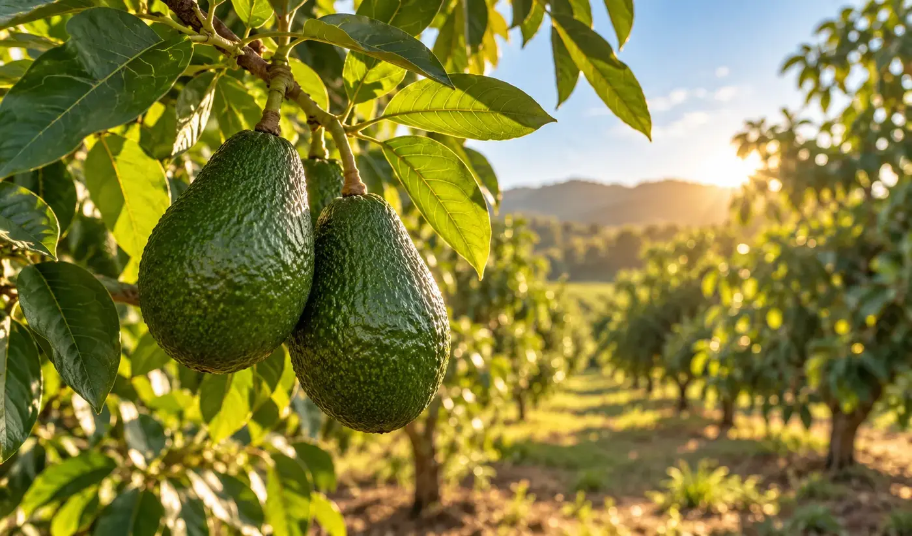
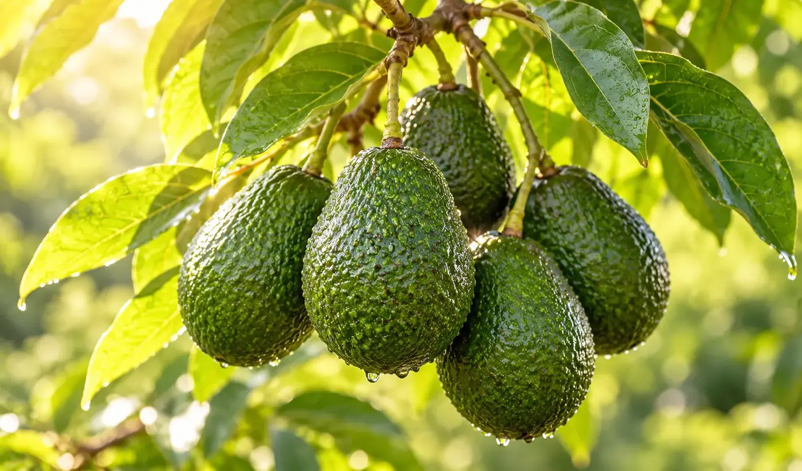
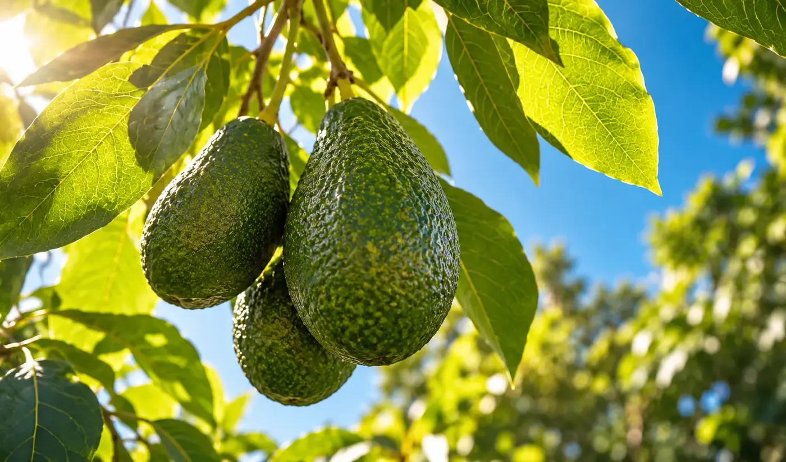
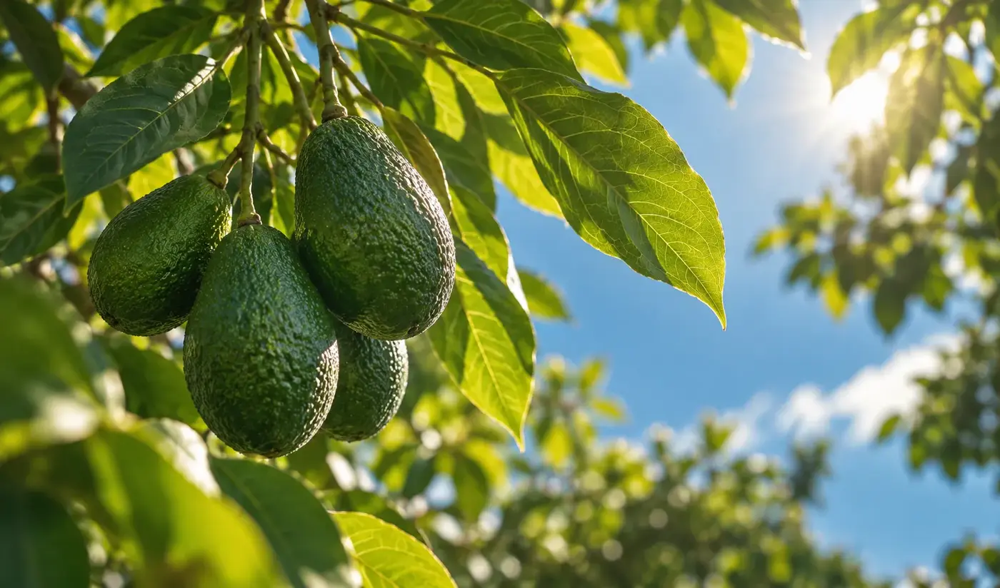
Receptes amb alvocats
Idees fàcils, sanes i delicioses
Descobreix com gaudir dels nostres alvocats cada dia amb receptes simples i plenes de sabor.
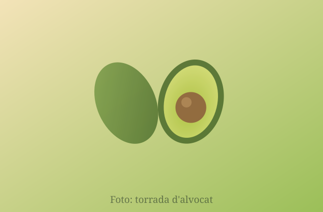
Torrada d'alvocat mediterrània
Una recepta ràpida, fresca i deliciosa per qualsevol moment del dia.
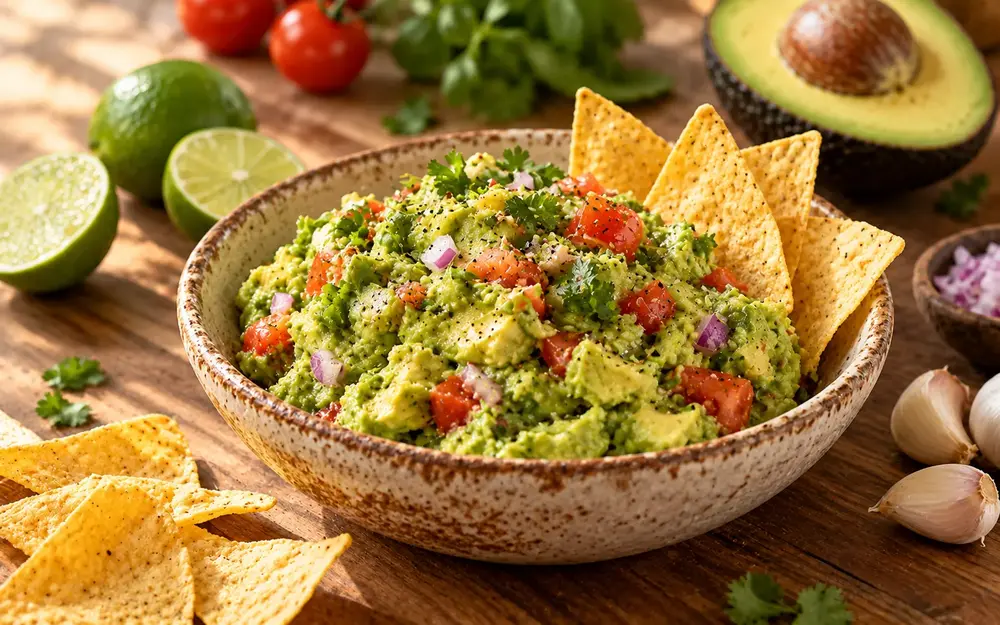
Guacamole de la casa
La recepta clàssica amb un toc especial de l'Empordà.
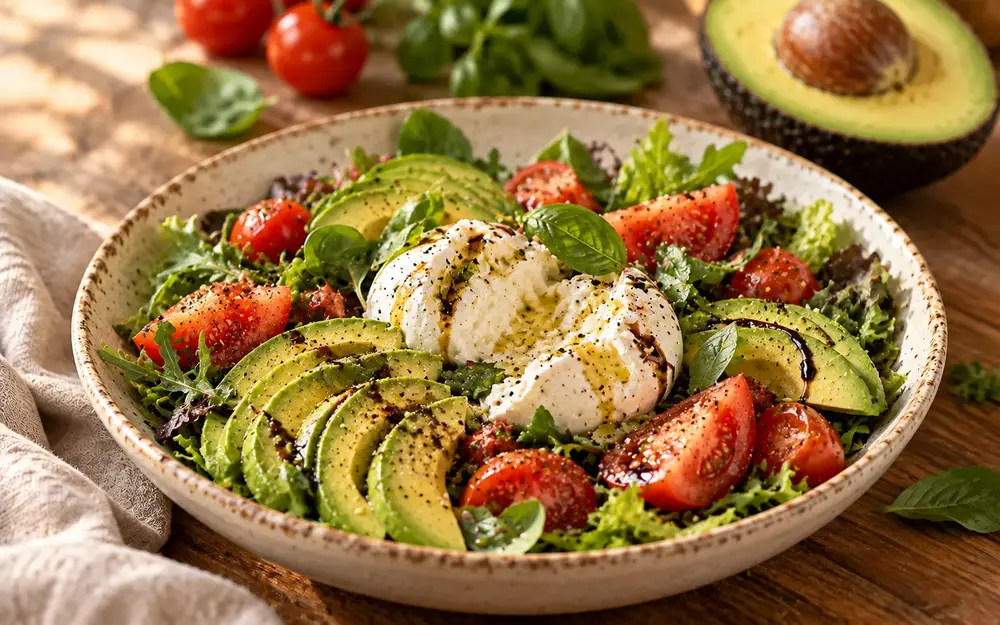
Amanida d'alvocat, tomàquet i burrata
Una combinació perfecta de sabors i textures.
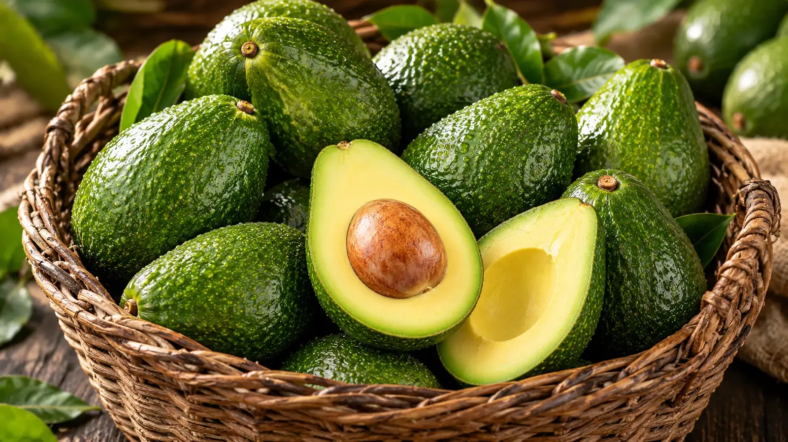
Uneix-te a Arrels de l'Empordà
Rep novetats, receptes i ofertes especials
Subscriu-te i sigues el primer a descobrir tot el que envolta el nostre món de l'alvocat.